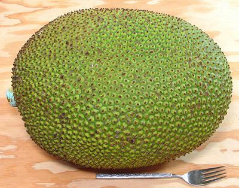
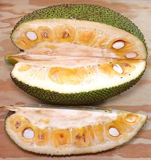
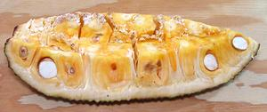
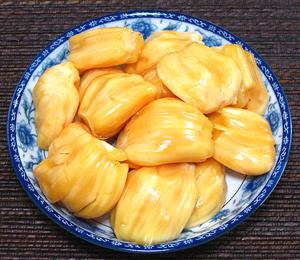
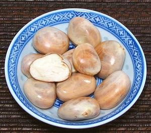
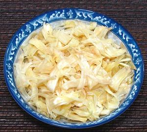

Jackfruit

[Chakka (Malayalm); Jaka (Portuguese); Nangka (Malay), Mit (Viet);
Kanoon, Khanun (Thai); Katahal (Hindi); Artocarpus heterophyllus]
Jackfruit is probably native to the Indian subcontinent, probably the
Western Ghats, and was carried to the Malay peninsula in ancient times.
It has been cultivated for between 3000 and 6000 years. Today it is grown
in almost all humid tropical lowland regions worldwide. A few are grown
in Florida but not commercially.
Jackfruit come in three basic varieties. In India and Southeast Asia
there are very large "hard" jackfruit with firm arils around the seeds,
and smaller "soft" jackfruit with darker, sweeter and soft pulpy arils.
In Brazil a third variety is recognized called "butter" jackfruit. Its
arils are between the firm and soft varieties. All the jackfruit we
get in California is the "hard" variety, grown in Mexico. Some of the
soft jackfruit is grown in west central Mexico, but they don't ship it
here. In the Philippines, a smaller "latex free" variety is grown, and
sells for a premium price.
Jackfruit is not only the largest of the mulberries, it's the largest
tree fruit in the world. How big they get varies by authority, but 80
pounds and 3 feet long is a pretty safe number. Those sold in North
America generally run between 15 and 25 pounds. The photo specimen was
a mere 12 inches long and 9 inches diameter, weighing 18 pounds and was
grown in Mexico.
More on Mulberries.
General:
Jackfruit is a seasonal crop, but the season is
long, about 6 months, and the trees are highly productive. A jackfruit
has an inedible core extending from the stem, and a thick inedible rind,
hard and pointy on the outside. Between the core and the rind are the
fruit arils with their seeds They are embedded in "rags", which are
actually unfertilized flower ovaries that didn't develop into seeds.
Every point on the outside of the rind represents a flower.
Cooking:
Recipes calling for cooking jackfruit pretty
much always mean Unripe Jackfruit,
whether they say so or not, and often they do not. Asian recipe writers
just presume you know that. To complicate things more, in India, recipes
calling for unripe jackfruit call it "Raw Jackfruit". Unripe Jackfruit
is often used in curries.
Buying:
Fresh whole ripe jackfruits appear in the
markets almost all year now, here in Southern California, as they are
now imported from major plantings in Mexico. A fully ripe jackfruit will
have a bit of flexibility in the outer rind, a light but distinct aroma,
and may sound a bit hollow if patted. It may have some give around the
stem, but it shouldn't be soft. They should be quite green and have no
evidence of cracking in the outer rind due to drying out. In season
they are selling for 2017 US $0.99/pound in the Philippine markets,
$0.99/2 pounds in the larger Asian and multiethnic markets, and the
photo specimen was purchased in mid May during a one day sale for
$0.99/3 pounds. Currently, fresh unripe jackfruit does not seem to be
available in Southern California, but frozen is widely available.
Many markets now sell Jackfruit cut into chunks, in case you can't
commit to a 20 pound monster. Chunks are also often available in the
frozen food cases of markets serving Southeast Asian and particularly
Philippine communities. Frozen yellow fruit arils are also widely
available, as well as slices of immature jackfruit (most useful for
curry recipes).
Unripe jackfruit is often called "Raw Jackfruit" in recipes. Canned
unripe jackfruit packed in brine is called for in many recipes of Asian
origin. Though jackfruit arils packed in syrup are very common in the
Asian markets here in Los Angeles, I haven't seen the unripe jackfruit
packed in brine. For those recipes use a package of frozen unripe
jackfruit, easily available in Asian markets.
Be Aware:
The product sold as "Baby Jackfruit"
is not a jackfruit at all, it's a Vietnamese bitter gourd called
Gac. For details see our
Gac page.
Storing:
Uncut jackfruits keep a few days at room
temperature but start to dry out, evidenced by cracking of the green
outer rind between the points and softening of the stem end. Once cut
the whole fruit should be completely disassembled. The yellow fruit
arils can be refrigerated for a few days or frozen for a year or so.
The seeds should be processed soon - they are not designed for
durability and go to mold rather quickly. The "rag" is rarely used,
but if you intend to, it should be cut from the rind and refrigerated
for use within a few days.

Preparing:
: The biggest problem when preparing a fresh
jackfruit is the white latex sap it exudes when cut. This sap is
impervious to soaps and cleansers. I recommended you coat knives,
cutting surface and your hands with oil before proceeding and be
prepared to wash and re-oil occasionally.

A workable strategy is to cut the jackfruit in half lengthwise, then
again lengthwise into quarters. Then cut out the core and start working
on removing the seeds and fruit arils from the "rag". How difficult this
is is highly variable depending on jackfruit cultivar and the individual
fruit. You will probably have some rag adhering to the arils, but it
pulls off easily.
The "rag" is not often used, but is edible. If you intend to use it,
it should be cut away from the outer rind immediately, separating into
individual strands and immersed in cold water acidulated with citric acid
or lemon juice to prevent browning. After soaking for 15 minutes or so
the rag can be squeezed out, bagged in plastic and refrigerated.
Yield:
An 18 pound jackfruit yielded 5 pounds 3 ounces
of yellow fruit arils (29%), 1 pound 9.6 ounces of seeds (8.9%) and 1
pound 3 ounces of easily recoverable rag (6.6%). That all makes 44.5%
edible if you use the rag, 37.7% if you don't.
Clean-up:
This is always a problem due to the latex.
It's pretty much impervious to soap, detergent and even cleansers like
Ajax or Comet. First wash off all the water soluble stuff, then use a
solvent to clean off the latex. In Southeast Asia they use kerosine
which is widely available there. I use Acetone or a similar solvent,
as that's what I usually have on hand - and they don't leave a smell
or oil residue like kerosene would.

Arils:
These are the delicious gems of the jackfruit.
They are about 1-3/4 inches long, 2 inches wide and 1 inch thick, and
weigh about 1-1/4 ounces. Each surrounds a large seed, but the seeds pop
out very easily, leaving about 1 ounce of flesh. The arils of the variety
we get here in California are quite firm with just a little crunch.
They are moderately sweet and described as tasting like a combination of
mango, pineapple and banana.
The arils need no cooking and are often enjoyed just cut into chunks
as a fruit desert, possibly mixed with other fruit. Of course there are
many more complex deserts based on Jackfruit, including combined with
rice balls and coconut milk. Fruit drinks and ice cream also often are
flavored with Jackfruit.
In some regions, the arils are sliced, then deep fried to make
Jackfruit Chips. These are durable and can be taken on trips.

Seeds:
These seeds are typically 1.2 inches long,
0.9 inches wide and 0.6 inch thick, weighing about 1/4 ounce each.
They have a thin, moderately hard outer shell, and a thin brown inner
skin which can be left or scraped off, depending on preference. Some
people let them sit out to dry until the shells crack, making them easier
to peel. Others shell them after boiling and still hot and wet, when the
shells will be quite soft. At room temperature raw seeds will go to mold
in a few days, but bagged and refrigerated they will last more than a
week.
Jackfruit seeds are eaten cooked, as they may be slightly toxic raw.
Most common is to boil them or roast them for use as a snack. The taste
is much like chestnuts. Jackfruit seeds are also incorporated into
curries, for which we finally have a recipe:
Jackfruit Seed Curry.

Rags:
The arils are embedded in the rags, which
are actually flower ovaries that didn't develop into arils and seeds.
These are not used in most regions, but we have finally found and
improved a recipe from Konkani, India which makes them quite worthwhile
as a snack or garnish: Jackfruit
Rag Fries. In Vietnam, researchers have been experimenting with
extracting liquid from the rags using enzymes, and fermenting the liquid
into a 5.5% alcoholic beverage, which has been judged palatable.
Rinds:
The outer rind is clearly inedible, hard and
spiky. The inner rind from which the rags are removed can be quite
bitter, or it can be almost entirely without flavor. I haven't seen any
mention of people eating the rinds.
Unripe Jackfruit / "Raw" Jackfruit
 Recipes that call for cooking jackfruit pretty much always call for
unripe jackfruit, whether they say so or not. Recipes of Asian origin
usually just presume you know that. In India unripe jackfruit is called
"Raw Jackfruit", but many recipes just call for "Jackfruit". Unripe
Jackfruit is often used in curries and the like. Because it is treated
so differently from ripe jackfruit we have broken it out to a separate
"Raw" Jackfruit page, for easy
reference from recipes.
Recipes that call for cooking jackfruit pretty much always call for
unripe jackfruit, whether they say so or not. Recipes of Asian origin
usually just presume you know that. In India unripe jackfruit is called
"Raw Jackfruit", but many recipes just call for "Jackfruit". Unripe
Jackfruit is often used in curries and the like. Because it is treated
so differently from ripe jackfruit we have broken it out to a separate
"Raw" Jackfruit page, for easy
reference from recipes.
mb_jackz 090901 - www.clovegarden.com
©Andrew Grygus - agryg@clovegarden.com - Photos on this
page not otherwise credited are © cg1 -
Linking to and non-commercial use of this page permitted